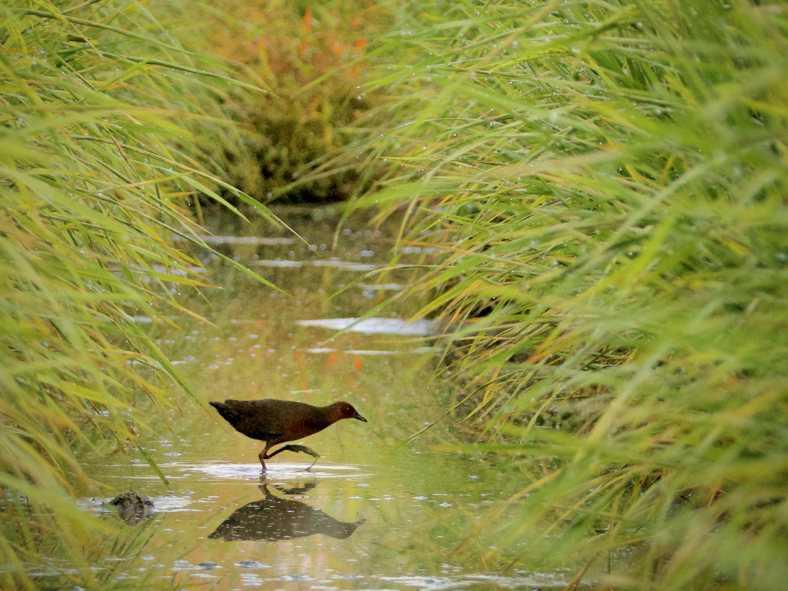
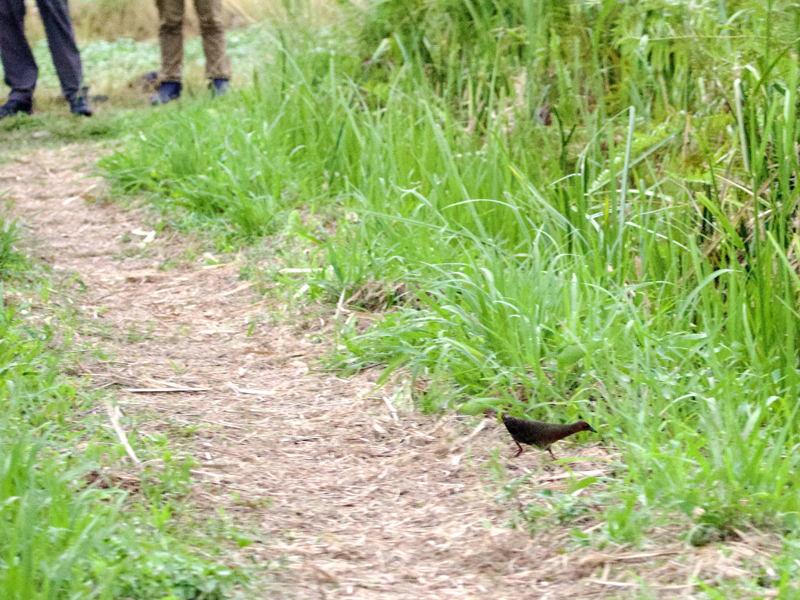

Ruddy-breasted Crake
Zapornia fusca
Order: Gruiformes
Family: Rallidae

A shy crake, with a brown body, reddish breast and legs, and a striped vent. Flicks tail while walking.

The candid moments of crakes in photos are but a very small portion of one's experience with them. They always react to people with such overblown dramaticism, sprinting at the sight of anything. So, why did the crake cross the road?